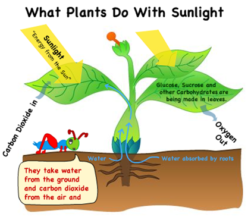

Students' ability to interpret science-based graphical and digrammatic information varies widely. Nonetheless, interpretation and comprehension of such media is a critically important skill in science. Rather than withholding such media from students in an attempt to reduce barriers to learning, CLIPPS focuses on provided students with individualized built-in scaffolds for interpreting graphical information. Below is a diagram shown in four different renditions, ranging from most highly scaffolded to unscaffolded.
1) Narrative TourIn this version of the diagram, the grasshopper acts as an agent and highlights critical features of the photosynthesis process in a narrative/story-based format. The grasshopper fills in connections to lived experience and importance. The information is displayed as printed text in the speech bubble with concurrent voice-over. The student can replay the animation if desired. |
3) Sequenced PresentationThis version of the diagram is an animation of the photosynthesis process, showing the various (conspicuous) steps in sequence. As each step is displayed, the yellow fade technique is employed to draw attention to the change. The sequence is cumulative; previous stages remain visible as new steps are added. The student can replay the animation if desired. |
|  | |
3) Annotated DiagramThis version of the diagram is not “animated.” Instead, “hot spots” are strategically located on the diagram. When the student mouses-over the hot spots, the cricket speech bubble text is replaced with annotation text which supplements the information presented in the original diagram. |
4) Static DiagramThis is the original diagram without any interpretation supports. |